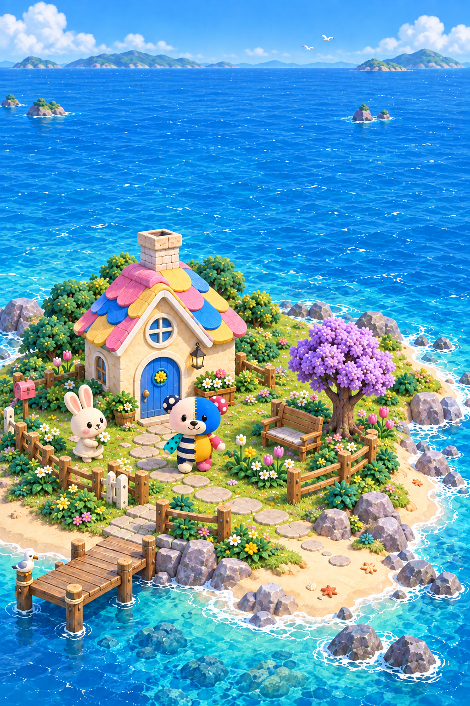

POKOMOKO / ISLAND LIFE / DEV V1
学んで、何をつくるか選ぶ。
花の庭にも、遊具が集まる庭にも。ぽこもこの行き先だけ決めて、住人が自分で楽しむ様子を眺める試作です。島での行動の中心は「ときどき配置すること」。学習へは一操作で戻れます。
機能の一周：PASS
通常学習→購入→配置→時間成長→住人→外観→学習再開を2サイズで確認。
見た目：HOLD
配置と暮らしの検証用。海・植生・家・住人の見え方は仕上げ前。
子どもの体験：未検証
N=0。無説明での理解や、翌日また学びたくなるかは未確認。
成長画面は、通常の問題を解いて得た資源で配置した後、明示的な開発用操作で6時間進めたものです。実際に一晩待った記録ではありません。価格・速度・閾値は試作用。公開判定は既存の回帰検査3件を含め保留です。
01 はじめの庭
02 学習で購入・配置
03 6時間送りで花畑に
04 ひかりで外観変更
05 同じ学習予約へ復帰
キービジュアルとの比較
家とぽこもこの中心性を参照。現状は配置が分かる機能試作で、右の実画面を左のアートと同等の完成度とは評価していません。

参照キービジュアル今回の実画面候補：island-life-choices-v1
対象：http://127.0.0.1:5224/ ／ DEV + VITE_ISLAND_ENABLED=true + VITE_ISLAND_LIFE_PREVIEW=true
元HEAD：70ad92c15a976ae9be2c9513cd4825ea961e4dc0 ＋未コミット作業内容
固定した入力：9886de25a42656bf302b1352f0e0fdd2a62204eed67c99fd0916f20a43b46daa
入力一覧 · 実画面の検査 · 検証結果